CSAPP 16-io4
UNIX/Linux I/O
- 用户程序可通过调用特定的I/O函数的方式提出I/O请求。
- 在UNIX/Linux系统中，可以是C标准I/O库函数或系统调用的封装函数，前者如文件I/O函数
fopen()、fread()、fwrite()、fclose()或控制台I/O函数printf()、putc()、scanf()、getc()等；后者如open()、read()、write()、close()等。 - 标准I/O库函数比系统调用封装函数抽象层次高，后者属于系统级I/O函数。与系统提供的API函数一样，前者是基于后者实现的。
## 概述
“一切皆文件”； - Linux中的文件都是二进制比特串；
- 所有的I/O设备在系统中都以文件形式呈现：
- /dev/sda2
- /dev/tty2
- 内核也以文件形式呈现：
- /boot/vmlinuz-3.13.0-55-generic (kernel image)
- /proc (kernel data structures)
## 文件分类
### Regular Files
- Text files：用ASCII或Unicode字符编码的文件；
- Binary files：可执行目标文件，图片；
- Kernal内核不能区分这两者；
Directories
一些常用命令：
* mrdir创建文件夹；
* ls查看文件夹内容；
* rmdir删除文件夹（文件夹必须是空的）；
*
.链接自己，..链接它的父文件夹，cd ..即可返回上一级目录；
Linux 文件系统以
/（根目录）为起点，所有文件和目录都组织在这个树状层次结构下。
文件操作
打开文件
打开文件时，内核会返回一个小的非负整数，称为描述符；
// 成功则返回新文件描述符，失败返回-1
int open(char *filename, int flags, mode_t mode);返回的是在进程中当前没有被打开的最小描述符，由于进程开始时都会创建三个文件：
* 0：stdin；
* 1：stdout；
* 2：stderr；
所以文件描述符一般从3开始；
文件共享
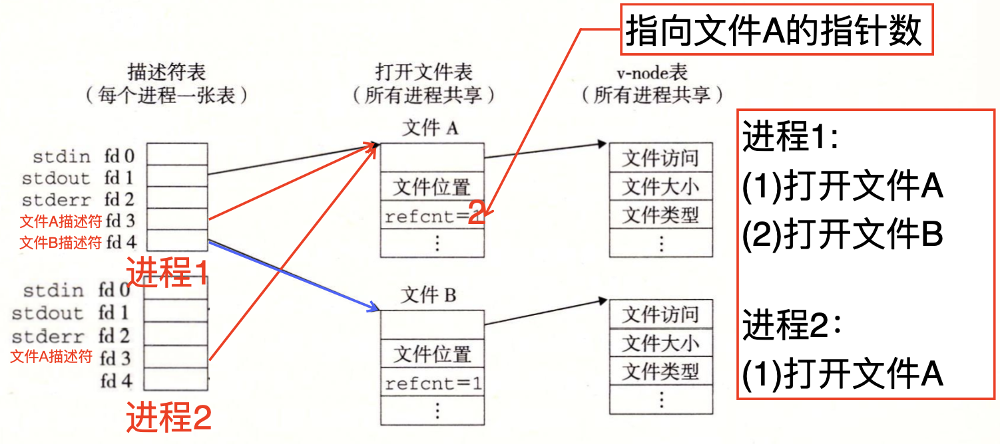
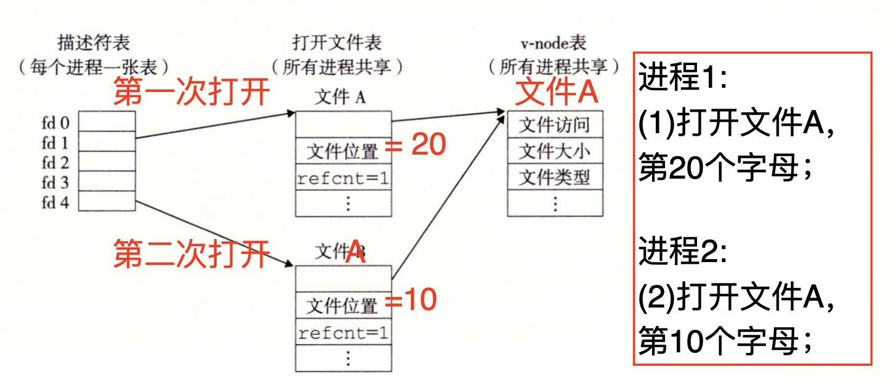
读写文件
ssize_t read(int fd, void* buf, size_t n); // 返回成功读取的字节数，失败为-1
ssize_t write(int fd, const void* buf, size_t n); // 同上注意ssize_t被定义为signed
long类型，因为它需要返回-1，而size_t是unsigned long类型；
Short count指的是当执行 I/O 操作（如 read 或
write）时，实际读取或写入的字节数小于请求的字节数，如遇到以下情况：
* 遇到文件末尾 (EOF)
* 从终端读取文本行
* 从网络套接字读取或写入
当向磁盘读取或写入时一般不会发生；
创建进程
Fork语句
Pid_t Fork();返回值为进程编号：
* 0为子进程；
* > 0为父进程；
* -1为Fork失败；
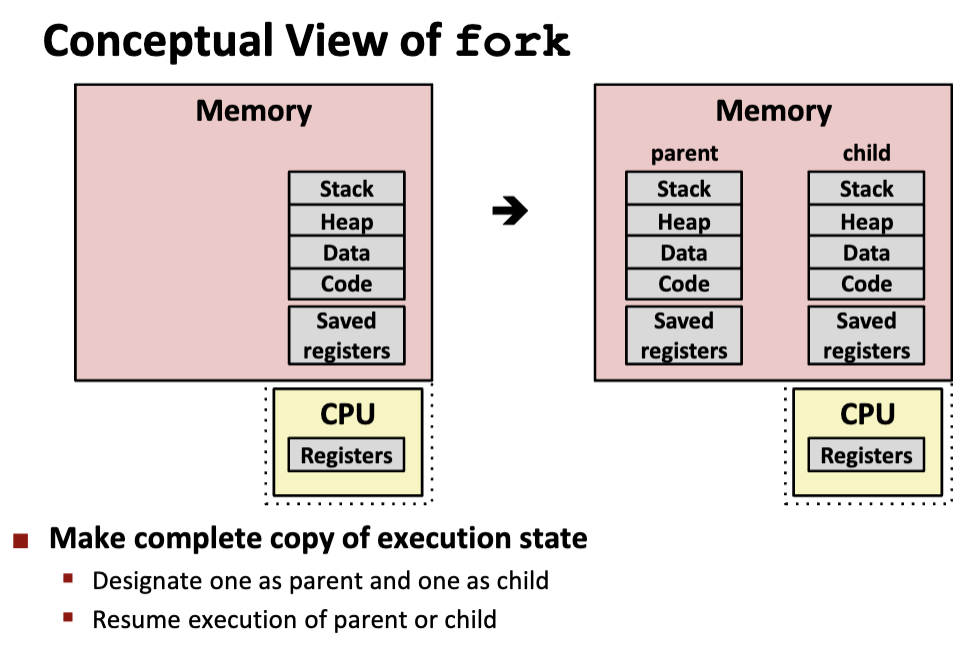
fork会复制fork之后的所有代码创建子进程；其执行过程如下：
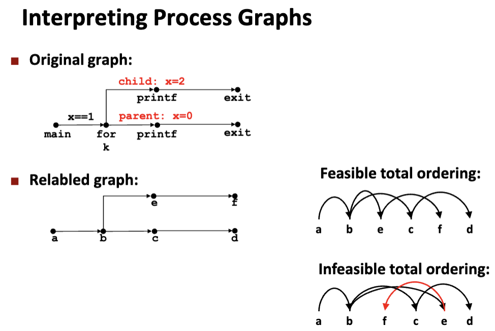
注意进程的调度规则不定，哪个先执行完都有可能；
I/O重定向
比如，我们希望将当前进程的stdout改为另一个文件，即更改描述符表；通过dup2来实现：
int dup2(int oldfd, int newfd);如果原来fd1指向文件A，调用dup2(4,1)后：
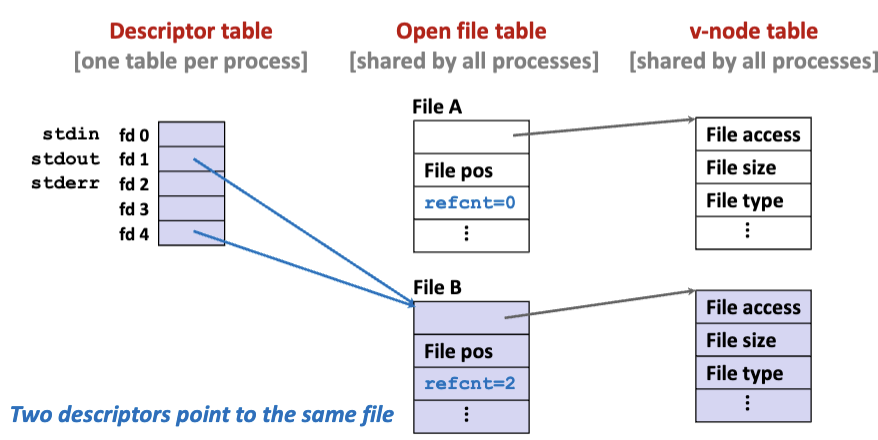
## 一个读的例子
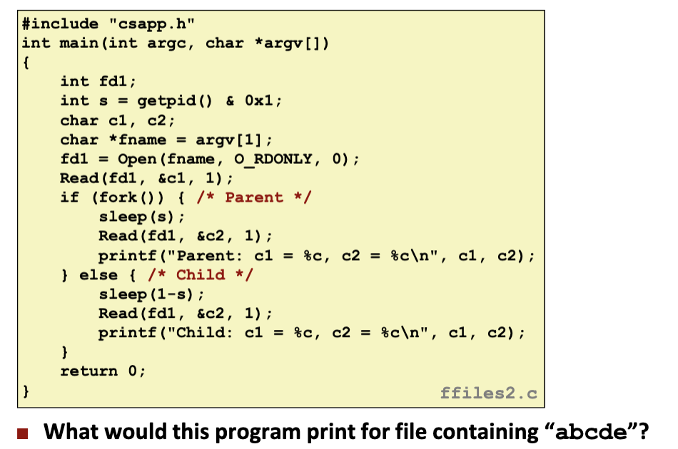
需要明确子进程和父进程共享同一打开文件表；
*
s = getpid() & 0x1决定了进程的执行顺序，如果s =
0，则父进程先执行，如果s = 1，则子进程先执行；* fork前的
Read(fd1, &c1, 1)，已经从打开文件中读取一个字符a到c1，打开文件表中的文件位置++；* 执行fork后，父子中先执行的进程执行
Read(fd2, &c2, 1)，即c2
= b，同时文件位置++，并输出结果；* 后执行的进程执行
Read(fd2, &c2, 1)，即c2 =
c，同时文件位置++，并输出结果；结果有2种可能：
Parent: c1 = a, c2 = b
Child: c1 = a, c2 = c
Child: c1 = a, c2 = b
Parent: c1 = a, c2 = c一个写的例子
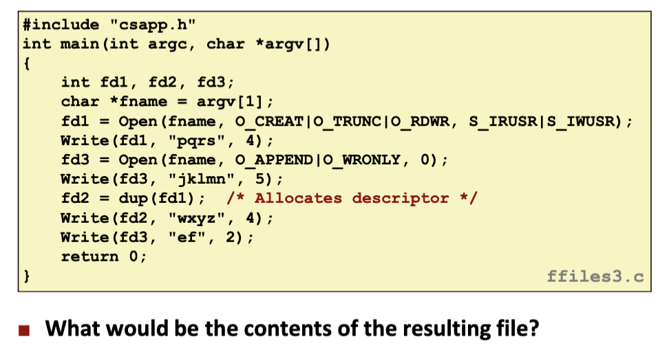
首先需要明确一些标志的含义：
* O_CREAT：如果文件不存在，创建文件；
* O_TRUNC：如果文件存在，则清空文件内容；
* O_RDWR：文件以读写方式打开；
* O_APPEND：每次写操作都会将数据追加到文件末尾；
* O_WRONLY：仅允许写操作；
dup(fd1)复制文件描述符 fd1 到 fd2 ，新描述符 fd2 与 fd1
共享相同的文件表项；Write(fd1, "pqrs", 4)将"pqrs"写入文件；Write(fd3, "jklmn", 5)将"jklmn"写入文件末尾；Write(fd2, "wxyz", 4)将"wxyz"写入文件，注意fd1的文件位置为4(写入pqrs后)，所以此时文件的内容为"pqrswxyz"；Write(fd3, "ef", 2)将“ef”仍写入文件末尾；所以最终答案为："pqrswxyzef"；
Standard I/O
标准I/O库将一个打开的文件模型化为一个流。对于程序员而言，一个流就是一个指
向FILE
类型的结构的指针。每个ANSIC程序开始时都有三个打开的流stdin、stdout
和stderr，分别对应于标准输人、标准输出和标准错误；
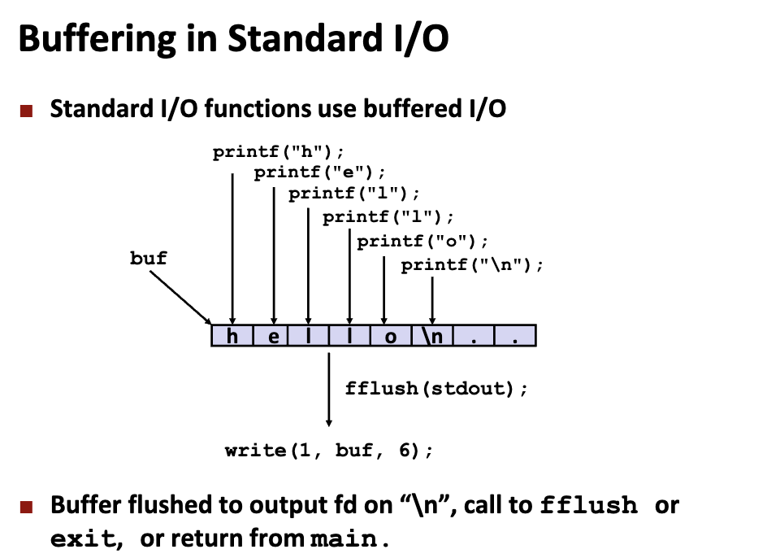
Unix I/O vs. Standard I/O
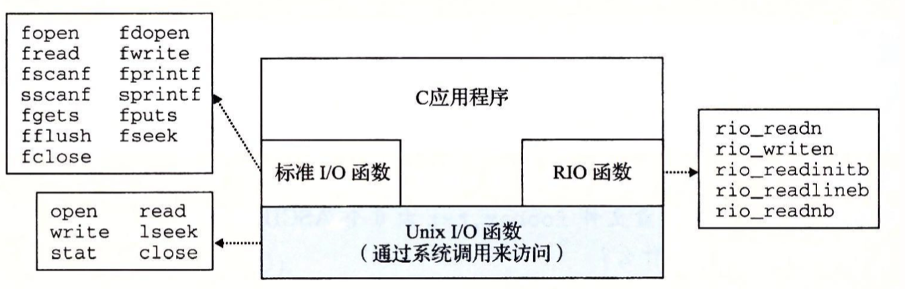
系统调用和API
- 应用编程接口（API）与系统调用两者在概念上不完全相同，它们都是系统提供给用户程序使用的编程接口，但前者指的是功能更广泛、抽象程度更高的函数，后者仅指通过软中断（自陷）指令向内核态发出特定服务请求的函数。
- 系统调用封装函数是 API 函数中的一种。
- API 函数最终通过调用系统调用实现 I/O。一个API 可能调用多个系统调用，不同 API 可能会调用同一个系统调用。但是，并不是所有 API 都需要调用系统调用。
- API 在用户态执行，系统调用封装函数也在用户态执行，但具体服务例程在内核态执行。
I/O 类型
- Programmed
I/O：无条件传统方式，查询方式，效率低；
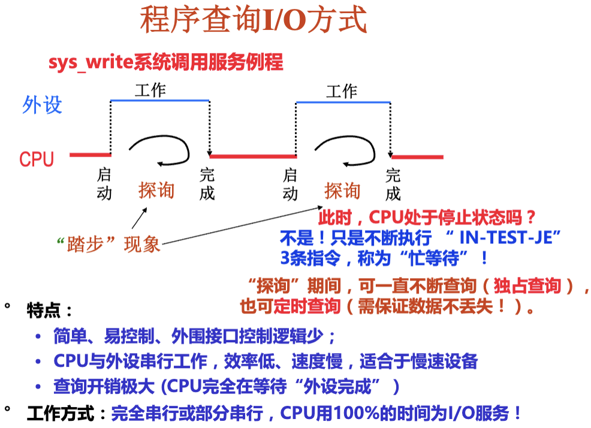
- Interrupt Driven I/O：中断驱动 I/O 中，处理器启动 I/O 操作后无需等待，可以执行其他任务，直到设备通过中断信号通知处理器数据传输完成；
- DMA：由 DMA 模块负责在 I/O 单元和主存之间直接传输数据，无需处理器干预；
总结
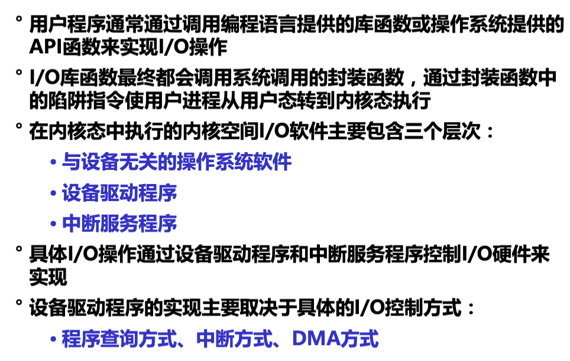